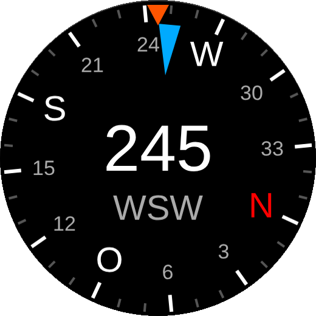
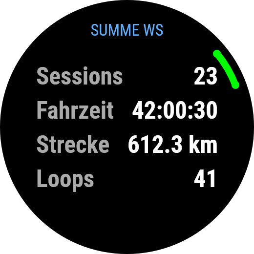
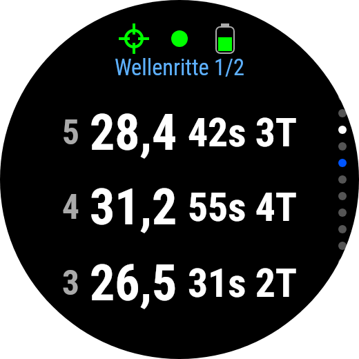
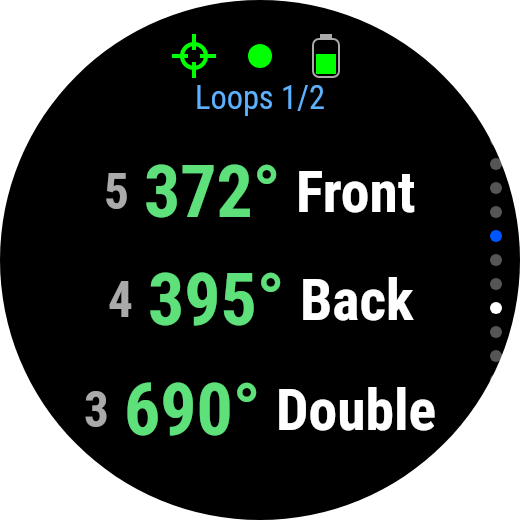
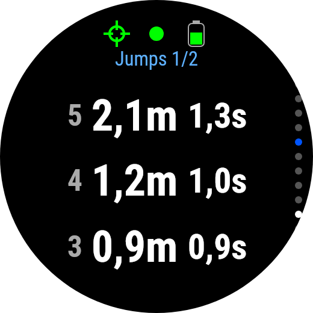
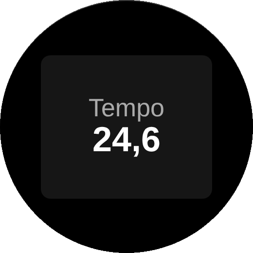
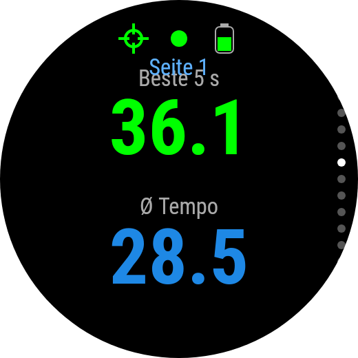

User guide · Garmin Connect IQ · Windsurfing, Wing Foiling and Surfing
Guide revision V15 · Updated: 27 November 2026
Help develop SurfsApp
Would you like to support development or request a particular feature? Sanitized FIT files from real sessions help improve sport specific functions and develop new features, such as detecting specific manoeuvres. Remove personal information first using the FIT Privacy Cleaner. The option to send me the sanitized FIT file directly will be added to the FIT Privacy Cleaner.
1 Overview and sports
SurfsApp records windsurfing, wing foiling and surfing as separate sports. Each sport has its own settings, metrics and display pages. This keeps planing time and jibes separate from surfing paddling time or wing foiling jumps.
Windsurfing Planing, jibes, tacks, wave rides, slides, jumps and loops. Details are provided in this guide.Wing foiling Speed, distance, riding states, manoeuvres and dedicated jump analysis. Go to the wing foiling guide.Surfing Sitting, paddling, ride time and waves. Go to the surfing guide.
The recording is saved as a Garmin activity. You can see live metrics on the watch and a summary after saving. The SurfsApp web app supplements this data with maps, charts and sport specific detailed analysis.
Select the three sports on the home screen. Under Settings → Sports you choose which sports are available there. Settings for one sport do not change the settings for another.
The images in this guide show a round watch with a 260 × 260 pixel display. Font sizes and spacing may vary slightly between watch models. The values shown are examples.
2 Controls
Button operated watches (fēnix)
Control
Function
START/STOP
Select, confirm and start recording. During recording: open the action menu.
UP / DOWN
Move through lists, change values and browse pages during recording.
Hold UP
Open Settings, including during recording.
BACK
Go back one level. On the home screen, it exits the app. During recording, it sets a marker.
Touchscreen
The touchscreen is not used. Water droplets do not trigger any actions.
Touchscreen watches with two buttons
Control
Function
Upper button
Select, confirm and start recording. During recording: open the action menu.
Lower button
Go back one level. On the home screen, exit the app. During recording: set a marker.
Swipe up / down
Browse lists and pages, including during recording.
Swipe left / right
Browse pages only during recording and while paused (left = forward, right = back).
Tap
No function. Selection is always made with the upper button.
Long press on the screen
No function. Settings are available as a separate “Settings” item on the home screen and in the action menu.
During an active recording, the screen is locked. Only swiping to browse pages is possible. The screen is unlocked in sport selection, in the preview and during a manually set pause.
In every list, the selected item appears in the centre with a blue border, with the adjacent items shown in grey above and below. Blue arrows on short lists indicate that more items are available in that direction. Lists loop continuously: the first item follows the last.
3 Home screen and preview
Home screen Select a sport. “Last session” appears as soon as an analysis has been saved.Preview Green triangle: recording has not started yet. The green arc points to the START button.
Use UP and DOWN to select Windsurfing, Wing Foiling or Surfing. Choose which sports are shown under “Sports”. When a saved analysis is available, “Last session” is also displayed. On the vívoactive 4, “Settings” is shown as well. If only two entries are available, the version number and any messages appear below them.
Select a sport and press START. The preview opens. Nothing is recorded yet.
You can browse all pages in the preview. After the compass, the “Totals” page shows the totals for all saved sessions in that sport.
Press START to begin recording. BACK returns to sport selection.
Check the settings under Mode. Some settings determine which fields are included in the activity and therefore only take effect from the next session onwards (Section 7).
If the watch has enough storage for only a shorter recording than usual, the preview displays a message showing the available recording time. Press any button to close it.
4 Recording
Action menu
Action menu Press START during recording to open it.Confirmation For Save and Discard, “No” is selected by default.
During recording, START/STOP opens the action menu. You can pause, resume, save or discard the session, or open Settings. Available menu items vary by watch model.
Action
What happens?
Pause
Pauses the recording. Resuming continues the same session.
Resume
Resumes a paused recording.
Save
Ends the recording and saves the activity.
Discard
Ends the recording without saving an activity.
Settings
Opens Settings on supported watch models.
When saving or discarding, a confirmation prompt appears. Use UP and DOWN to choose Yes or No. No is selected by default. START confirms; BACK returns.
Pause
Windsurfing and wing foiling can be paused manually or automatically. With Automatic the watch pauses recording when speed remains below Pause below for longer than the configured time. As soon as Resume speed is reached again, recording resumes. With Manual you control pausing and resuming yourself.
For Surfing recording is paused manually only. Waiting time between waves therefore remains part of the session. The surfing guide explains the different thresholds and how surfing time is classified: Surfing guide.
Saving detailed recordings
When you use a detail level such as Visu for windsurfing or wing foiling, the watch records additional motion data. Saving may therefore take longer than for a standard GPS recording. Allow the save process to finish completely if you want to keep these details. The watch indicates when data is still being processed.
Marker
When markers are enabled, press BACK during recording to set one, for example after a particularly good ride or jump. The watch confirms it with two short vibrations. Markers cannot be set while paused. They can later be found on the map and in the charts in the web app.
Settings during recording
Settings can also be opened during a recording. Some changes only take effect in the next session because the watch prepares the additional data at the start. If the watch displays Applies to next session, the current recording remains unchanged. Therefore, set important detection modes and thresholds before starting whenever possible.
When the watch splits a recording
For particularly long recordings or when free storage is limited, the watch may automatically split a session into several activities. The watch indicates the change and then continues recording. In Garmin Connect, the parts appear as separate activities. After syncing, check that all parts have been transferred.
5 Seiten während der Aufnahme
Mit HOCH und RUNTER blättern Sie durch die verfügbaren Seiten. Die Punkte am rechten Rand zeigen die aktuelle Position. Eigene Seiten haben einen blauen Punkt. Welche Seiten erscheinen, hängt von der Sportart und den eingeschalteten Modi ab.
Sportart
Seiten und Inhalt
Alle Sportarten
Hauptseite mit Zeit, Tempo, Herzfrequenz und Strecke, danach Maxima und Kompass. Die Summe aller gespeicherten Sessions erscheint in der Vorschau.
Windsurfing
Wellen und Wellenritte, Rittdetails bei Wellenritt Visu, Loop Seite und Loop Liste, Jump Liste. Seiten erscheinen, sobald Daten vorhanden sind.
Wing foiling
Downwind Seite und Jump Liste. Mit aktivierter Lernphase und Downwind können Sie einen Downwind Abschnitt manuell mit BACK markieren. Die Seite selbst zählt Downwinds nicht automatisch und kann deshalb Platzhalter enthalten. Details stehen in der Wingen Anleitung.
Surfing
SURF LIVE, WELLEN, TURNS und SURF SESSION. Die Surf Seiten werden in der Surfing guide einzeln erklärt. Die TURNS Seite zeigt derzeit noch keine eigenständigen Turn oder Slide Messwerte.
Hauptseite Zeit, Tempo, Herzfrequenz, Strecke und Pulszonenbogen.Pause Oben steht AUTO oder das Pausezeichen. Das Tempo wird durch Vmax ersetzt.Maxima Höchstgeschwindigkeit, Herzfrequenz und sportartspezifische Bestwerte.Wellen beim Windsurfen Letzter Ritt und seine Turns.Downwinds beim Wingen Separate Seite. Nicht verfügbare Werte erscheinen als Striche.

Loops Letzter Loop und verfügbare Detailwerte.Kompass Blickrichtung und, sofern vorhanden, die Windrichtung.

Summe Gesamtwerte aller gespeicherten Sessions dieser Sportart. Nur in der Vorschau.
Listen für Wellenritte, Loops und Jumps

Wellenritte Durchschnittstempo, Dauer und erkannte Turns.

Loops Erkannte Loop Art und Drehung.

Jumps Sprunghöhe und Flugzeit.
Die Listen erscheinen erst, wenn mindestens ein Ereignis erkannt wurde. Sie zeigen die letzten Einträge. Die vollständige Sessionauswertung folgt nach dem Speichern.
6 Eigene Seiten
Zusätzlich zu den festen Seiten können Sie pro Sportart zwei eigene Anzeigeseiten einrichten. Windsurfen, Wingen und Surfen haben jeweils ihre eigene Belegung. Eine Änderung beim Windsurfen verändert also nicht die Wing oder Surf Seiten.
Einrichten
Öffnen Sie die Einstellungen der gewünschten Sportart und wählen Sie Seiten. Öffnen Sie dort Seite 1 or Seite 2.
Aktiv schaltet die Seite ein oder aus.
Layout bestimmt, ob eine bis sechs Werte gleichzeitig angezeigt werden.
Position legt beim Windsurfen und Wingen fest, ob die Seite hinter der Hauptseite, den Maxima oder den Wellen erscheint. Beim Surfen ist die Position fest vorgegeben.
Belegung öffnet die Auswahl der Datenfelder für jede Zelle.
Seitenmenü Eigene Seiten ein und ausschalten.Seiteneinstellungen Aktiv, Layout, Position und Belegung.Layout Ein bis sechs Zellen.Belegung Eine Datenanzeige für jede Zelle festlegen.Datenfeld wählen Die Auswahl passt sich der Sportart an.
Layouts

Eine Zelle Ein großer Wert.

Zwei Zellen Zwei Werte untereinander.Drei Zellen Ein Wert oben, zwei darunter.Vier Zellen Raster mit zwei Spalten.Fünf Zellen Fünf Werte ohne Beschriftung.Sechs Zellen Sechs Werte ohne Beschriftung.
Die erste Zelle wird grün, die zweite blau dargestellt. Bei fünf und sechs Zellen entfallen die Beschriftungen, damit die Werte gut lesbar bleiben.
7 Einstellungen
Auf Uhren mit fünf Tasten halten Sie HOCH gedrückt, um die Einstellungen zu öffnen. Bei der vívoactive 4 wählen Sie auf der Startseite den Eintrag Settings. Während einer Aufnahme erreichen Sie die Einstellungen ebenfalls über das Aktionsmenü oder den langen Tastendruck, je nach Uhrmodell.
Die Menüs sind nach Sportarten getrennt. Wählen Sie auf der Startseite die gewünschte Sportart und öffnen Sie deren Einstellungen. Jede Sportart hat die Bereiche Mode, Defaults, Seiten und IQ Felder. Dadurch bleiben die Einstellungen übersichtlich und verändern nicht versehentlich eine andere Sportart.
Bereich
Wofür er da ist
Sportarten
Legt fest, welche Sportarten auf der Startseite zur Auswahl stehen.
Pause
Für Windsurfen und Wingen: Manuell oder Automatic. Bei Surfen wird ausschließlich manuell pausiert.
Mode
Aktiviert oder deaktiviert sportartspezifische Erkennungen und wählt deren Detailstufe. Die Unterschiede stehen in Abschnitt 8 und 9.
Defaults
Enthält die Geschwindigkeitsgrenzen und die Pausewerte der gewählten Sportart.
Seiten
Schaltet feste Sportseiten und eigene Seiten ein oder aus.
IQ Felder
Wählt aus, welche zusätzlichen Kennzahlen als Garmin Connect IQ Felder in der Aktivität gespeichert werden.
System
Sprache, Connect Felder, Marker und Akku Diagramm.
Wichtige Grenzwerte
Sportart
Einstellung
Startwert
Bedeutung
Windsurfen und Wingen
Resume speed
5,5 km/h
Geschwindigkeit, ab der eine Fahrt nach einer automatischen Pause wieder aufgenommen wird.
Windsurfen und Wingen
Gleitschwelle
11 km/h
Ab dieser Geschwindigkeit zählt die Fahrt als Gleiten.
Windsurfen und Wingen
Pause below
5 km/h
Bei Automatic die Geschwindigkeit, unter der die Pause beginnen kann.
Windsurfen und Wingen
Pause nach
15 Sekunden
Wie lange die Geschwindigkeit unter dem Grenzwert liegen muss, bevor pausiert wird.
Surfing
Gleitschwelle
6,5 km/h
Ab dieser Geschwindigkeit zählt die Zeit als Rittzeit.
Surfing
Paddelschwelle
2,5 km/h
Ab dieser Geschwindigkeit zählt die Zeit als Paddelzeit. Darunter zählt sie als Sitzzeit.
Beim Surfen kommen die Einstellungen Turn Rate und Turn Winkel hinzu. Sie beeinflussen, wie deutlich eine Drehbewegung sein muss, damit sie bei der Wellenerkennung berücksichtigt wird. Die Startwerte sind 25 Grad pro Sekunde und 45 Grad.
Änderungen an Grenzwerten oder Aufzeichnungsmodi gelten teilweise erst ab der nächsten Session. In diesem Fall zeigt die Uhr beim Verlassen der Einstellungen den Hinweis Applies to next session. Bereits laufende Aufnahmen behalten ihre ursprüngliche Datenbasis.
Die Einstellungen sind auch während der Aufnahme erreichbar. Änderungen sollten Sie möglichst vor dem Start vornehmen, damit Sie während der Session nicht versehentlich einen anderen Aufzeichnungsumfang wählen.
8 Detailstufen und IQ Felder
SurfsApp bietet bei mehreren Erkennungen drei Stufen. Sie bestimmen, wie viel die Uhr während der Session erfasst und wie tief Sie die Daten anschließend auswerten können.
Stufe
Was sie bedeutet
Wann sie sinnvoll ist
Aus
Die jeweilige sportartspezifische Erkennung ist ausgeschaltet. Die normalen GPS, Tempo, Strecken und Pulsdaten werden weiterhin aufgezeichnet.
Wenn Sie die Funktion nicht benötigen oder eine möglichst einfache Aufzeichnung wünschen.
Connect
Die Uhr erkennt und zählt Ereignisse und speichert die wichtigsten Kennzahlen in der Aktivität. Die Daten können in Garmin Connect und in der SurfsApp Auswertung erscheinen.
Für eine gute Übersicht mit Zählern und Bestwerten.
Visu
Zusätzlich zu den Kennzahlen werden erweiterte Bewegungsdaten aufgezeichnet. Damit sind in der Web App detailliertere Darstellungen möglich, sofern die jeweilige Sportart diese Auswertung unterstützt.
Wenn Sie ein Manöver oder einen Sprung später genauer nachvollziehen möchten.
Wichtig: Visu ist die detailreichste Stufe. Sie erzeugt mehr Daten und kann das Speichern nach der Session verlängern. Je nach Kombination stehen weniger zusätzliche IQ Felder zur Verfügung. Für eine detaillierte Analyse müssen Sie Visu vor Beginn der Aufnahme einschalten. Daten, die während der Session nicht erfasst wurden, lassen sich nachträglich nicht rekonstruieren.
Welche Stufe gibt es in welcher Sportart?
Sportart und Funktion
Connect
Visu
Aus
Windsurfen: Wellenritt
Wellenritte, Turns und Kennzahlen zählen.
Zusätzlich Brettkurs und Slide Details für die spätere Analyse.
Keine Wellenritt Anzeige auf der Uhr. Die Web App kann Ritte weiterhin aus der GPS Spur ableiten.
Windsurfen: Jump
Jumps zählen, Höhe und Flugzeit anzeigen.
Zusätzliche Bewegungsdaten für die detaillierte Sprunganalyse.
Keine Jump Erkennung.
Windsurfen: Loop
Loops zählen und nach Möglichkeit nach Art unterscheiden.
Zusätzliche Messdaten für die räumliche Loop Analyse.
Keine Loop Erkennung.
Wingen: Jump
Jumps zählen und Kennzahlen speichern.
Zusätzliche Messdaten für die spätere Sprunganalyse.
Keine Jump Erkennung.
Surfen: Wellenritt
Wellenritte anhand von Tempo und Bewegung erfassen.
Zusätzliche Bewegungsdaten aufzeichnen. Die eigenständige TURNS Seite zeigt derzeit trotzdem noch keine Turn oder Slide Werte.
Keine Wellenritt Zählung auf der Uhr.
IQ Felder und eigene Seiten sind nicht dasselbe
Custom pages zeigen Werte während der Aufnahme direkt auf der Uhr. IQ Felder werden zusätzlich in der gespeicherten Garmin Aktivität abgelegt und können dort in Garmin Connect erscheinen. Die Web App berechnet weitere Kennzahlen aus der FIT Datei und den aufgezeichneten Bewegungsdaten.
Die IQ Felder sind je Sportart auswählbar. Typische Gruppen sind Geschwindigkeit, Manöver, Fahrzustände, Wellenritte, Jumps und Loops. Beim Surfen stehen stattdessen Werte zu Ritt, Paddeln und Sitzen bereit. Wählen Sie nur die Kennzahlen, die Sie tatsächlich in Garmin Connect benötigen. Die Uhr zeigt an, wenn eine Auswahl mit dem gewählten Detailmodus nicht vollständig zusammenpasst.
Garmin begrenzt die Zahl der zusätzlichen IQ Felder auf 16 pro Aktivität. Einige Detailmodi benötigen selbst Platz für ihre Messwerte. Deshalb kann die Zahl der frei auswählbaren Zusatzwerte kleiner werden, wenn Sie mehrere Detailmodi gleichzeitig aktivieren. Die Anzeige in der IQ Felder Auswahl zeigt, wie viele Werte ausgewählt sind und wie viele Plätze zur Verfügung stehen. Nicht gespeicherte IQ Felder erscheinen nicht in Garmin Connect. Die eigentliche Auswertung in SurfsApp bleibt davon unabhängig.
9 Windsurfen: Wellenritte, Jumps, Loops und Marker
Wellenritte
Die Uhr erkennt Wellenritte automatisch. Im Menü Windsurfen → Modus → Wellenritt wählen Sie die Detailstufe.
Stufe
Ergebnis
Connect
Die Uhr zählt Wellenritte und Turns. Ein Turn besteht aus Bottom Turn und anschließendem Cutback. Die Auswertung zeigt unter anderem den besten Ritt, Tempo vor und nach den Turns sowie Wellen je Runde.
Visu
Ergänzt die Connect Werte um Brettkurs und Slide Analyse. Auf der Uhr erscheint zusätzlich die Seite Rittdetails. In der Web App können Sie den Verlauf eines Ritts und die Slides je Turn genauer ansehen.
Aus
Die Wellenritt Seiten und die Zählung auf der Uhr entfallen. Die Web App kann Wellenritte weiterhin aus der GPS Spur ableiten, aber keine zusätzlichen Bewegungsdetails anzeigen.
Ein Slide ist eine deutliche seitliche Bewegung des Brettes während des Cutbacks. Die Uhr leitet die Brettbewegung aus der Armbewegung ab. Wenn Sie während des Ritts umgreifen, kann die Richtung daher abweichen. Visu liefert die Grundlage für diese Detailauswertung.
Jumps
Ein Jump ist ein Sprung ohne Loop. SurfsApp ermittelt Anzahl, geschätzte Höhe und Flugzeit. Im Menü Windsurfen → Modus → Jump stehen Connect, Visu und Aus zur Wahl.
Jump ab legt die Mindesthöhe fest, ab der ein Sprung zählt. Der Startwert beträgt 0,3 m. Kleine Hüpfer können Sie damit aus der Zählung heraushalten. Die Höhe ist eine Berechnung aus den Bewegungsdaten und keine direkte Höhenmessung.
Loops
Loops werden getrennt von normalen Jumps erfasst. Die Uhr unterscheidet Frontloop, Backloop und Double Forward. Wenn eine Zuordnung nicht sicher ist, erscheint die allgemeine Bezeichnung Loop.
Loop Connect zählt die Loops und speichert die wichtigsten Kennzahlen. Loop Visu ergänzt Messdaten für die räumliche Analyse in der Web App. Unter Advanced Loops können bei Loop Visu zusätzliche Bewegungsdetails für anspruchsvollere Loop Formen erfasst werden.
Priorität Loop und Jump
Die Einstellung Priorität bevorzugt das Schreiben der detaillierten Loop und Jump Daten. Das kann die Wartezeit beim Speichern verkürzen. Dafür stehen weniger Plätze für andere zusätzliche IQ Felder zur Verfügung. Nutzen Sie die Einstellung vor allem dann, wenn Ihnen die detaillierte Sprunganalyse wichtiger ist als eine möglichst große Auswahl an Connect Kennzahlen.
Marker
Mit BACK setzen Sie während der Aufnahme einen Marker, zum Beispiel für einen besonders guten Ritt oder einen Sprung. Die Uhr bestätigt den Marker mit zwei kurzen Vibrationen. Marker lassen sich später in der Web App auf der Karte und in den Diagrammen wiederfinden. In einer Pause kann kein Marker gesetzt werden.
Die sportartspezifischen Funktionen für Wingen und Surfen sind in den Wingen Hinweisen und der Surfing guide getrennt erklärt.
10 Auswertung in der Web App
Die Uhr speichert jede Session als Garmin Aktivität. Für die ausführliche Analyse öffnen Sie die SurfsApp Web App und wählen die gewünschte Aufnahme aus der Sessionsliste. Die Web App ergänzt die kurze Uhrenauswertung um Karten, Zeitverläufe und sportartspezifische Detailansichten.
Die wichtigsten Bereiche
Bereich
Was Sie dort finden
Sessions
Ihre gespeicherten Aufnahmen mit Datum, Sportart und den wichtigsten Kennzahlen. Sie können nach Sportart und Zeitraum filtern, Favoriten markieren und eigene Kommentare ergänzen.
Karte
Die GPS Strecke. Die Farbgebung zeigt je nach Ansicht das Tempo. Marker helfen, einzelne Stellen der Session wiederzufinden.
Zahlen
Zeiten, Strecken, Tempo, Herzfrequenz, Bestwerte und sportartspezifische Kennzahlen. Nicht jede Kennzahl passt zu jeder Sportart.
Diagramme
Verläufe über die Zeit oder Strecke, zum Beispiel Tempo und Herzfrequenz. Weitere Messreihen erscheinen, wenn die Uhr sie in der gewählten Detailstufe aufgezeichnet hat.
Detailanalysen
Wellenritte, Slides, Jumps, Loops und die Wingen Lernphase mit Karten, Listen und Messverläufen, soweit die erforderlichen Daten vorhanden sind.
Auf schmalen Bildschirmen stehen die Bereiche am unteren Rand als Reiter Sessions, Zahlen und Diagramme zur Verfügung. In der Vollansicht sind die Inhalte breiter angeordnet. Zwischen beiden Darstellungen können Sie in der Web App umschalten.
Warum manche Details fehlen
Die Web App kann GPS Strecke, Tempo, Zeit und Herzfrequenz auch ohne Visu auswerten. Hochauflösende Bewegungsdaten für Slides, Jumps oder Loops müssen dagegen während der Aufnahme mit dem passenden Modus erfasst worden sein. Fehlen diese Daten, zeigt die Web App die entsprechende Detailansicht nicht oder kennzeichnet sie als nicht verfügbar.
Beim Surfen werden Rittzeit, Paddelzeit und Sitzzeit getrennt ausgewiesen. Beim Wingen stehen Jump Kennzahlen und bei aktivierter Lernphase zusätzliche Bewegungswerte zur Armbewegung zur Verfügung. Eine Downwind Detailanalyse wird nicht aus einer normalen GPS Strecke automatisch erzeugt.
11 Datenfelder für eigene Seiten
Die Auswahl für eigene Uhrenseiten richtet sich nach der gewählten Sportart. Damit können Sie die wichtigsten Werte direkt während der Session im Blick behalten.
Tempo, Vmax, Herzfrequenz, Strecke, Zeit, Fahrzustände, Manöver und Jump Kennzahlen.
Surfing
Tempo, Vmax, Herzfrequenz, Strecke, Rittzeit, Paddelzeit, Sitzzeit sowie Wellenwerte.
Wählen Sie ein Datenfeld in der Belegung der eigenen Seite aus. Wenn ein Wert für die Sportart nicht verfügbar ist oder in der Session noch nicht berechnet werden kann, zeigt die Uhr zwei Striche statt einer scheinbaren Null.
12 Unterstützte Uhren
SurfsApp läuft auf Garmin-Uhren mit Connect IQ. Die Bedienung hängt nur davon ab, ob die Uhr fünf Tasten hat oder eine Touch-Uhr mit zwei Tasten ist. Beides ist in Abschnitt 2 beschrieben.
Uhren mit Tasten
Bedienung über die Tasten, der Touchscreen wird nicht ausgewertet.
fēnix 5 Plus, 5S Plus, 5X Plus
fēnix 6 Pro, 6S Pro, 6X Pro
fēnix 7, 7S, 7X
fēnix 7 Pro, 7S Pro, 7X Pro (auch Solar ohne WLAN)
fēnix 8 (43 mm, 47 mm, 51 mm), 8 Pro, 8 Solar
fēnix 9, 9 Pro, 9 Pro Solar
fēnix E
epix (Gen 2), epix Pro (Gen 2) 42, 47, 51 mm
Forerunner 165, 165 Music
Forerunner 255, 255S, 255 Music, 255S Music
Forerunner 265, 265S
Forerunner 570 (42 mm, 47 mm)
Forerunner 955, 965, 970
Instinct 3 AMOLED (45 mm, 50 mm)
Touchscreen watches with two buttons
Bedienung über Wischen und die zwei Tasten.
Venu 3, Venu 3S
Venu 4 (41 mm, 45 mm)
vívoactive 4, 4S
vívoactive 5
vívoactive 6
Die Darstellung passt sich der Bildschirmgröße der Uhr an. Die Bilder in dieser Anleitung zeigen eine runde Uhr mit 260 × 260 Bildpunkten.